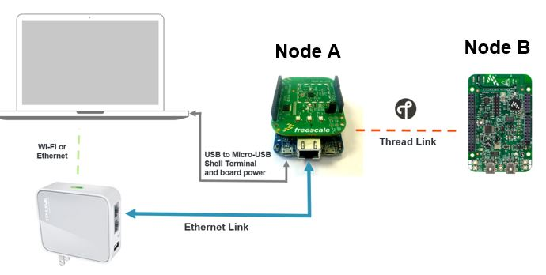

Before powering on the boards and starting the Thread network connect the Node A via Ethernet to the OpenWrt Router as in the image below

$ thr create
Note the status messages in the shell indicating the network parameters. Note a Commissioner instance also starts on Node A
$ thr join
Note the status messages in the shell indicating the joining results.
$ ifconfig
Note that the Ethernet interface has already been provisioned with the prefix fd8c:1f14:90ca to assign the Unique Local Address. Also note the device has been assigned an IPv4 address via DHCP.
Note that the 6LoWPAN interface has also been provisioned with a subprefix of fd8c:1f14:90ca to assign a Unique Local Address.
$ ifconfig
Interface 0: 6LoWPAN
Link local address (LL64): fe80::1885:ba8e:d82a:6fad
Mesh local address (ML64): fd4f:12be:69d2::9c67:fec9:9306:4791
Mesh local address (ML16): fd4f:12be:69d2::ff:fe00:400
Unique local address: fd8c:1f14:90ca:0001:18ef:f459:d754:ae31
Link local all Thread Nodes(MCast): ff32:40:fd4f:12be:69d2::01
Realm local all Thread Nodes(MCast): ff33:40:fd4f:12be:69d2::01
Note that the 6LoWPAN interface on the Thread interfaced router has also been provisioned with a subprefix of fd8c:1f14:90ca to assign a Unique Local Address in the site local home network.
C:\> route ADD fd8c:1f14:90ca:1::1/128 fd8c:1f14:90ca::1
OK!
C:\>ping fd8c:1f14:90ca:0001: 18ef:f459:d754:ae31
Pinging fd8c:1f14:90ca:0001: 18ef:f459:d754:ae31 with 32 bytes of data:
Reply from fd8c:1f14:90ca:0001: 18ef:f459:d754:ae31 : time=932ms
Reply from fd8c:1f14:90ca:0001: 18ef:f459:d754:ae31 : time=24ms
Reply from fd8c:1f14:90ca:0001: 18ef:f459:d754:ae31 : time=22ms
Reply from fd8c:1f14:90ca:0001: 18ef:f459:d754:ae31 : time=11ms
$ sudo route -n add –inet6 fd8c:1f14:90ca:1::1/128 fd8c:1f14:90ca::1
add host fd8c:1f14:90ca:0001: 18ef:f459:d754:ae31 gateway fd8c:1f14:90ca::1
$ ping6 fd8c:1f14:90ca:1::1
PING6(56=40+8+8 bytes) fd8c:1f14:90ca::387b:5427:33fa:b8f5 --> fd8c:1f14:90ca:0001: 18ef:f459:d754:ae31
16 bytes from fd8c:1f14:90ca:0001: 18ef:f459:d754:ae31 , icmp_seq=0 hlim=254 time=1021.479ms
16 bytes from fd8c:1f14:90ca:0001: 18ef:f459:d754:ae31 , icmp_seq=1 hlim=254 time=45.268ms